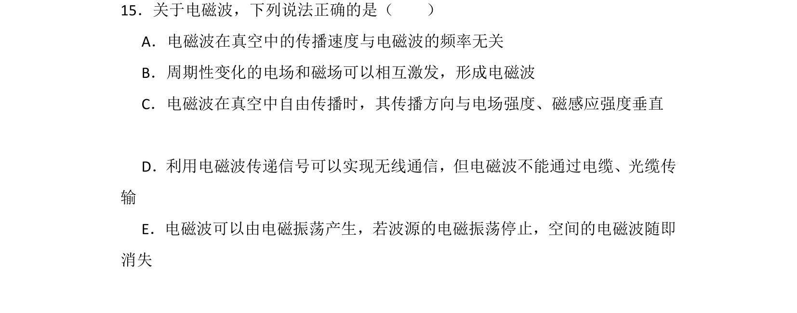
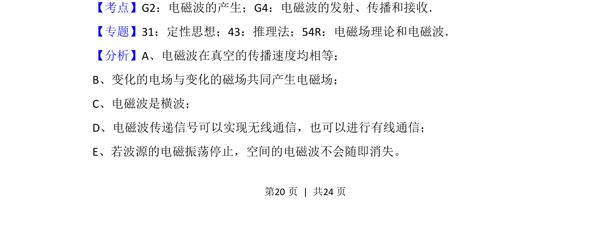
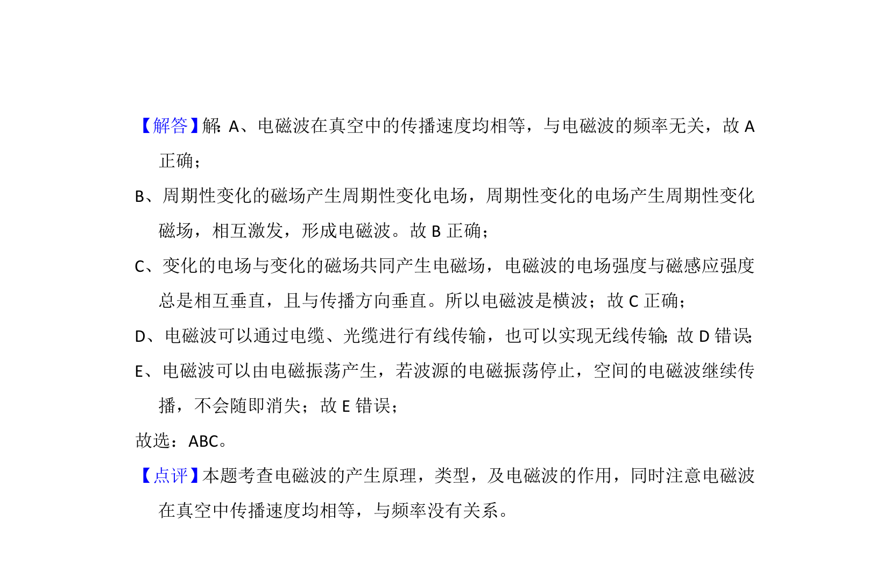

考点：电磁波的产生 电磁波的传播 电磁波的接收

该题考查电磁波的基本性质，包括产生机制、传播特性及传输方式。


📄 原 PDF 第 20 页：
素材/真题/吉林/2008-2024·（吉林）物理高考真题/2016年高考物理试卷（新课标Ⅱ）（解析卷）.pdf
15．关于电磁波，下列说法正确的是（ ） A．电磁波在真空中的传播速度与电磁波的频率无关 B．周期性变化的电场和磁场可以相互激发，形成电磁波 C．电磁波在真空中自由传播时，其传播方向与电场强度、磁感应强度垂直 D．利用电磁波传递信号可以实现无线通信，但电磁波不能通过电缆、光缆传 输 E．电磁波可以由电磁振荡产生，若波源的电磁振荡停止，空间的电磁波随即 消失
【考点】G2：电磁波的产生；G4：电磁波的发射、传播和接收．菁优网版权所有 【专题】31：定性思想；43：推理法；54R：电磁场理论和电磁波． 【分析】A、电磁波在真空的传播速度均相等； B、变化的电场与变化的磁场共同产生电磁场； C、电磁波是横波； D、电磁波传递信号可以实现无线通信，也可以进行有线通信； E、若波源的电磁振荡停止，空间的电磁波不会随即消失。